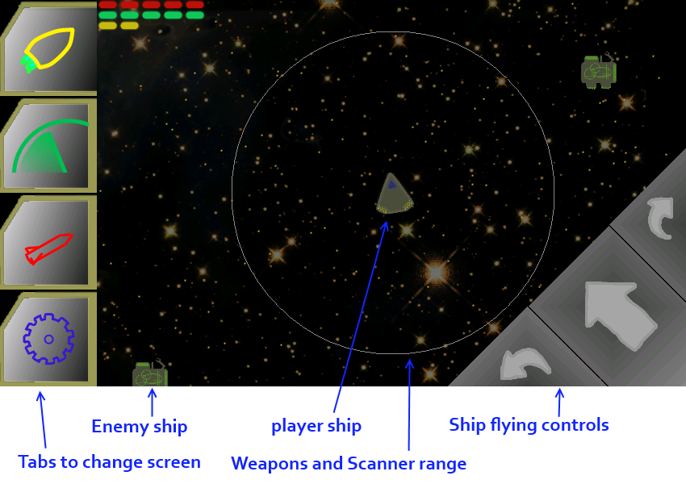
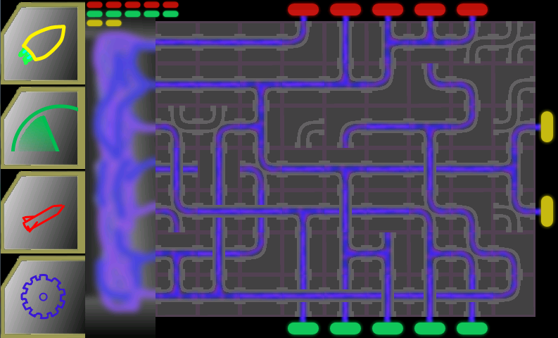
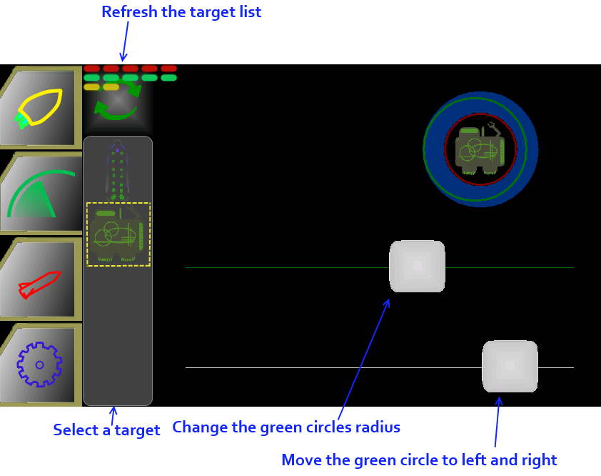
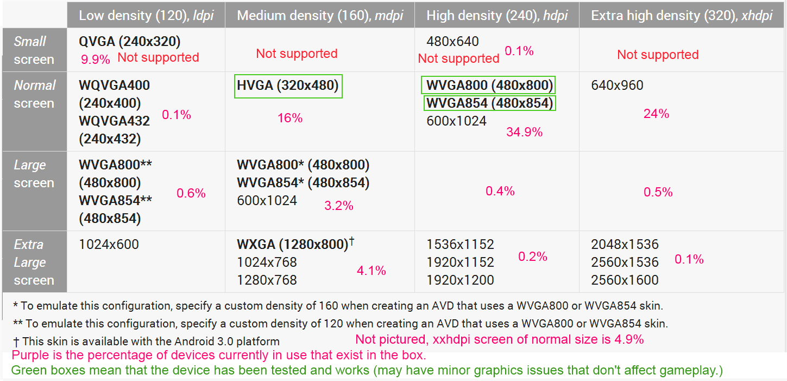

July 29, 2013Space Crazy PrototypeI have been working on a smartphone game for the last two months, the result is interesting but I don't think that the current game play mechanics form an game with replay value. I am presenting the prototype to the public to get some feedback, advice, and ideas on possible development directions to take. StoryThe story has not been put into the game yet so I put it here to give some context. The game takes place in space, you play as the Captain of a ship in the unified Earth fleet. Due to a long lasting peace with all the alien species the military is losing funding. As a result of this all of your crew is let go and you are in charge of flying the space ship yourself. The first mission involves being sent out to investigate why a star base is no longer responding to communications. Of course one of the alien species you are supposed to be at peace with has a mining ship there collecting resources from the destroyed space station. You send them a message, and after an awkward pause they attack. How To PlayI don't want to make an in game tutorial until I have pinned down the mechanics so you will need to look here to figure out how to play. The game consists of 4 screens, the tabs on the left will let you access all of the screens. Please excuse the programmer art, if I was going to release the game I would contract an artist. MapThe Map is a top down view of space centered around your ship, if your engines are powered you can fly the ship. You can pinch to zoom. EngineThe Engine is a series of power conduits, power comes in from the left side and goes out to the coloured tick tacks. Yellow is for movement, the more you have the faster you can go. Green is for the scanners, for each one powered you can have 1 ship locked in the scanner. Red is for weapons, each weapon requires power to run and you will be running multiple weapons at the same time. You can swap and rotate the tiles, when you take damage they will get shifted around. ScannerYou must scanner lock any ship or torpedo before you can fire upon it. To get a scanner lock you first select a target from the scroll bar on the left. Then move the two slider bars around so that the green circle is inside of the blue circle (and maintain it for a second or so). One slider controls the size of the green circle, and the other moves it left to right. WeaponsOnce you have a target locked you can shoot at it from the weapons screen. There are two lasers, to use a laser first turn it on with the power button (assuming you have enough red power). Then you can grab the grey handle and drag it up to the top, the goal is to drag it at the same rate as the yellow arrow. The closer you match the yellow arrow the more damage your laser will do. After that you reset the laser by dragging the grey handle back down. There is a large space on the right which I am planning to fill with a torpedo launcher but it is currently empty. 
Play the gameIf you have an android device and aren't afraid to play a game with programmer art and no sound, please try the test level here: https://play.google.com/store/apps/details?id=com.hernblog.spacecrazy&hl=enThe plan is to support any device that doesn't have what android groups as a "small" screen, if you have a device that doesn't work properly and is not a small screen, tell me what your device is and I will look into it (a photo of your problem would be appreciated as well). Here is an table of the different device sizes, with the ones that are for sure working boxed in green: Issues and Thoughts (feedback wanted)I am not sure if it's a good idea to make a game with 4 screens, navigated from tabs on the left. The tabs take up about 15% of the valuable screen space, and having 4 different views that the player has to keep track of might, instead of creating hectic game play, just cause frustration when they lose the game because of events they didn't notice. The player needs to be aware of events happening on the map screen, such as torpedoes being fired at them, and I'm not sure if audio and notifications (not implemented yet) would be enough. The way the player takes damage is by having the engine tiles rearrange themselves, so the player has to go in and line everything back up. I was hoping this would be fun, but it can be tedious and annoying when you are trying to fire on the enemy and and your engine keeps getting shuffled. I think there is something interesting here but I am not sure how to balance the mechanics so that it is fun. Other options could be to destroy or remove damaged tiles and have the user replace tiles or find another route for the power. Another option would be that each system could have a capacitor that saved up power, that way if you are in the middle of firing a laser when you lose power you can finish firing before you have to go sort the engine out. The scanner and weapons screens are not that interesting, I put them in to fill out the game and complete my 4 screens idea, but there could be ways to change them to create a better game. I thought about creating a scanner screen which would just show you the systems and cargo of a ship. You could use it to adjust your weapons to their hull types for improved damage, or select specific targets on the ship you were attacking, or have missions where you are looking for contraband and have to scan their cargo. The problem with all of those ideas is that I'm not sure they would improve the game, and they might not contribute to the hectic environment that I was going for. I haven't had any good ideas for the weapons screen, the current mechanic is just a way of keeping you on that screen so that you have less time to spend on the other screens but it doesn't seem that interesting or fun, it could be a good opportunity to insert a puzzle of some sort. There is currently no way for the player to die, for this I might have another tick tack in the engine called the containment field, and if it goes too long without power then the ship explodes. I think it ties nicely back into the engine mechanic and is more interesting then hit points. (Though currently all of the enemy ships have hit points, ally ships would probably have hit points as well.) One of the biggest road blocks I am up against is figuring out how to keep the game play lively and different. Yes I can slowly ramp up the difficulty but in the end is it really that exciting to rotate through the screens, scanning and firing upon enemies, while keeping your engine intact? How could I spice it up? At the end of the day I may have created 4 mediocre little games that loosely tie together, I am going to keep designing this game and if I come up with anything good, or get a little help from the internets, then I will hop back into the code and keep working on it. |
There and back again, an OOP tale Basic C# Auto Updater Pillars of Eternity is broken. A Silly Mistake Tweaking The Farseer Engine London Anime and Gaming Convention Sword Controls Update Texture Bleeding MoonBus Post Mortem Optimizing drawing with Sprite Sheets (Android) Space Crazy Prototype Android resource scaler my history with programming |
contact@hernblog.com
Follow @IanMakesGames